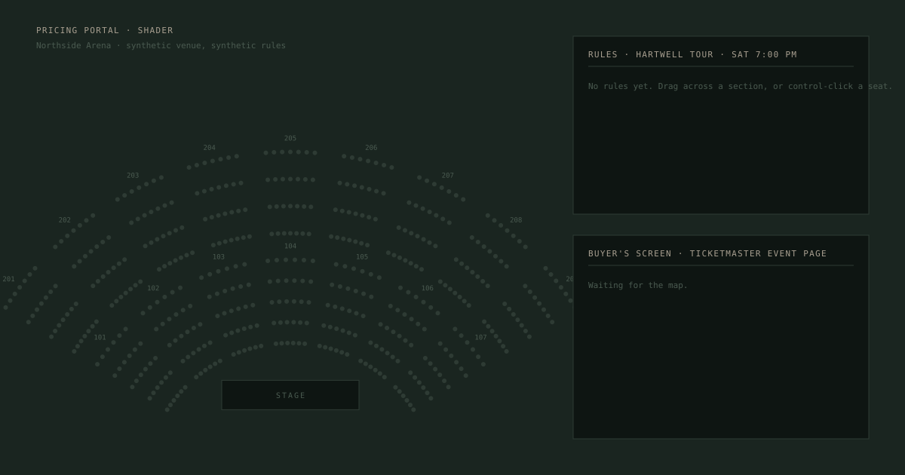
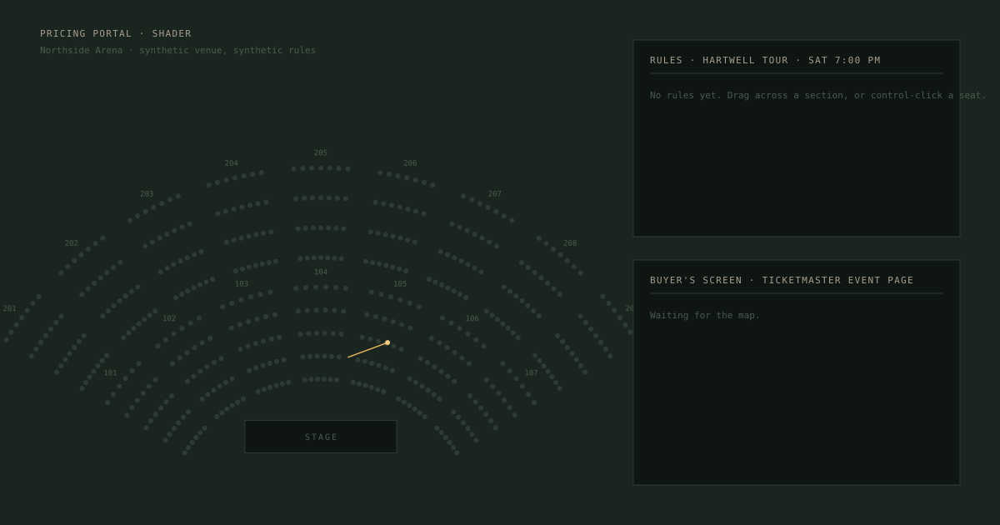
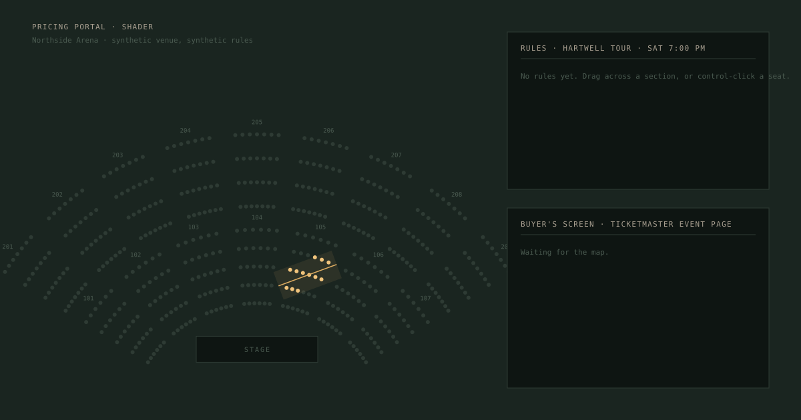
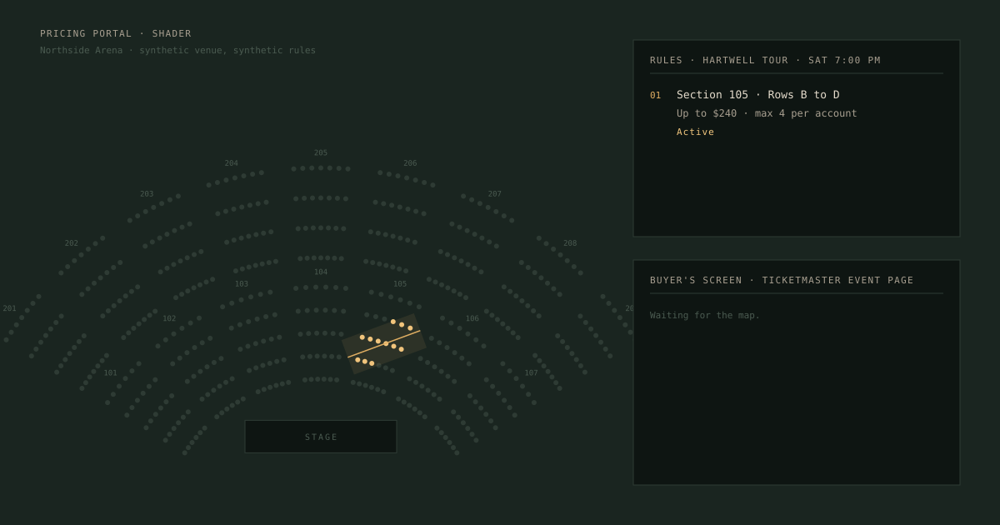
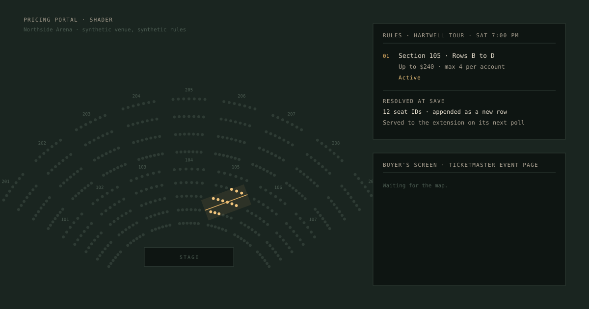
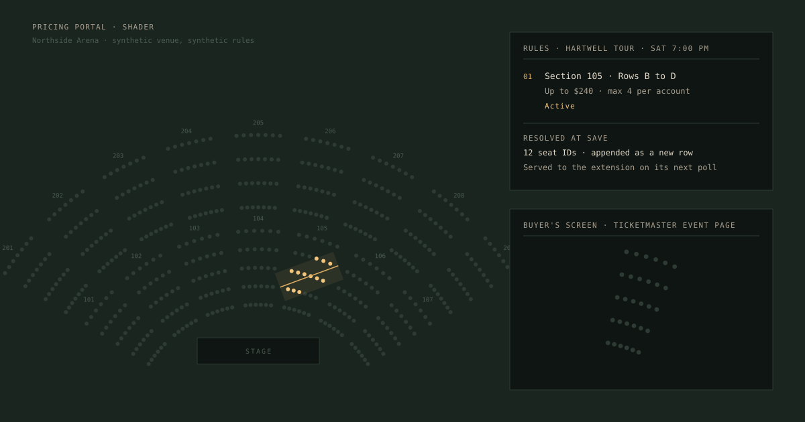
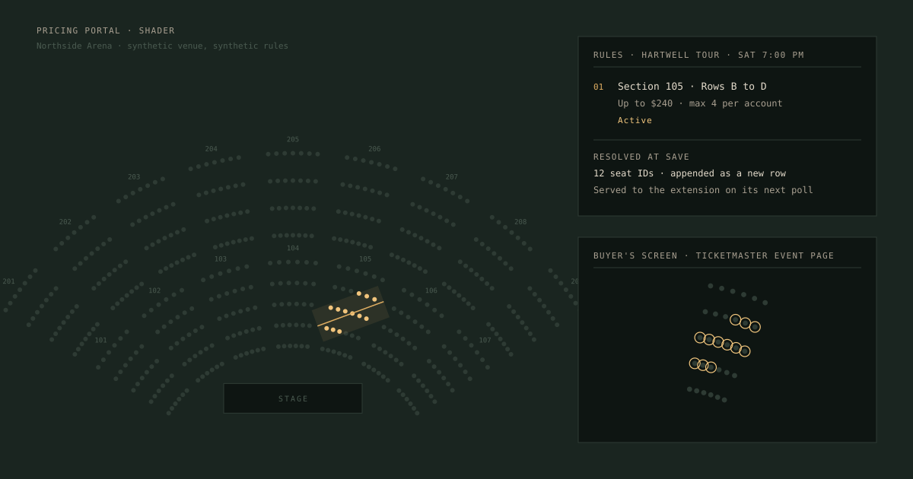
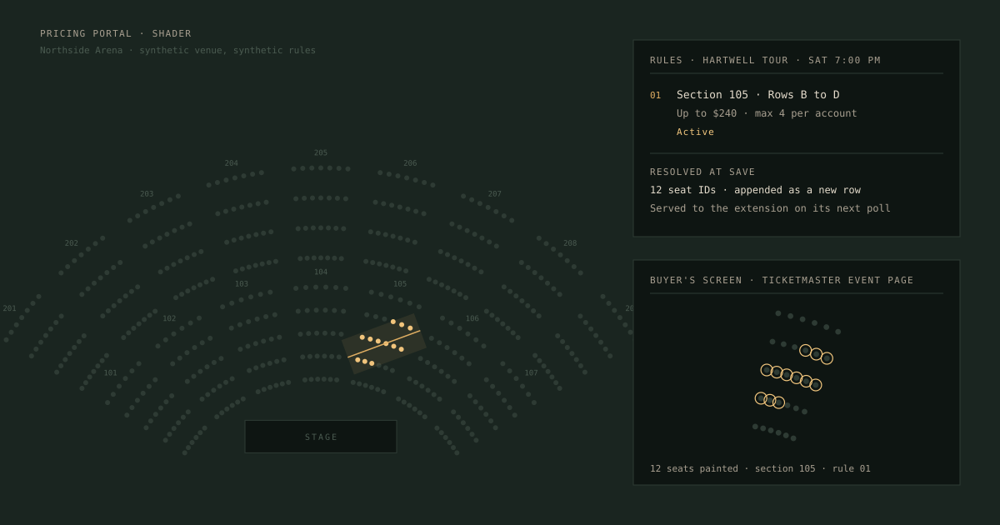

A 14-second loop in the hero plate, from 960 up. One rule is drawn on the portal's map, resolved, saved, and painted on the buyer's screen; then the plate holds and starts again. Below 960 and under reduced motion the plate is frame 8, the still, which is also the employer block's share image. Timing is from the plate's first paint on screen; off screen the loop pauses.

1 · 0.0 to 1.7 s The venue, every seat in the rule colour. The panel reads "No rules yet". The buyer's screen is waiting for the map. Nothing moves.

2 · 1.7 to 3.9 s The drag: a brass line drawn across section 105 from left to right (stroke-dashoffset, linear), a lit point at its head.

3 · 2.0 to 4.5 s The band around the line fills to 10% brass as the line completes; the seats inside it warm from the rule colour to lit over 2.2 s. The cursor fades at 4.8 s.

4 · 4.2 to 5.6 s Rule 01 appears in the panel: fades in and rises 6px (the site's ease, cubic-bezier(.16,1,.3,1)). Section, rows, price limit, quantity, Active.

5 · 5.9 to 7.0 s Resolved at save: the seat count, "appended as a new row", "served to the extension on its next poll". A plain fade.

6 · 7.3 to 8.4 s The buyer's screen: section 105 appears at the extension's zoom, every seat in the rule colour. The map is the marketplace's; nothing is painted yet.

7 · 7.8 to 9.8 s The paint: a lit ring grows out of each matched seat, radius 3.4 to 7, opacity 0 to 1, on the site's ease. The same seats that lit on the portal's map.

8 · 9.2 to 14 s, then the loop The note: "seats painted · section 105 · rule 01". Hold to 14 s. The loop restarts from frame 1 with no crossfade: the line, the band, the lit seats, the panel, and the paint all cut back to empty together, the way a page reloads. This frame is the still fallback and the OG image.
Looping, not scroll-driven
Both were considered. Scroll-driven would tie the rule's progress to the plate's position in the viewport, as the running margin's numeral is tied to the chapter boundaries. It was rejected because the plate is read while it sits still: at 1440 the hero is 776 by 407 and the reader stops on it, and a scrubbed animation would either be over before the plate is centred or ask the reader to scroll in order to see the paint. A loop plays whole while the reader looks, and the still is what they keep. It is the one looping element on the site, and it is the strongest image on the site, which is the exception the rule is for.
What it must not do: no easing on the drag (a hand drags at one speed), no glow beyond the lit colour's own, no bounce on the rings, nothing in the plate moves except what the rule touches.